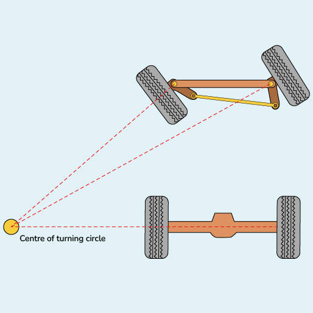

Secure Autonomous Systems
Instructor: Prof. Sibin Mohan, The George Washington University
CSCI 6907/3907 | Fall 2022 | TR 12:45PM - 02:00PM PT | SMTH 115
MP IV-B: Rover controll and attack
Administrivia
| Announcement Date |
Nov. 07, 2022 |
| Submission Date |
Dec. 08, 2022 |
| Submission Time |
11:59PM |
| Total Points |
15 |
Objective
In this MP, we want to see what an adversary can do when it has access to the rover.
The assumption is the adversary gained privileged access to the rovers system by some method like brute forcing or a man-in-the-middle attack.
Make a new mission
what is a waypoint
Waypoints define the route that the robot follows. Each waypoint stores a position, and the robot tries to reach that point with its limitations.
For making a new mission, you have to generate a new waypoint to show the rover the path it has to take. You can break a route into several points but how to choose them is important.
Sampling the trajectroy
Let's say we have a linear trajectory. The robot should go from (0,0) to (0,1). For this case, we can put infinit number of points between these two points, which doesn't make sense, while we can make the trajectory just
by using these 2 points; on the other hand, let's say we have a curve we need at least 3 points to sample that trajectory. For example, (0,0),(1,0),(0,1), we can add more points on that trajectory to help the rover to follow it better.
But sometimes, adding more waypoints will harm the system. What if waypoints are not put in correct sequance, or they are so close to each other that the rover will get stuck in waypoint changing state?
The question is can the rover reach each point in the correct sequence?
Ackermann Steering
This is the mechanism used in cars where the front wheels are turning to control the steering of the vehicle. Rather than the differential robots, the Ackerman cannot reach all the points because it has a limit
on the steering. Our rover uses the same steering system.

Rover
The waypoints file is located at catkin_ws/src/gwurover/src/trajectory. Each line is coordinated in order of "y,x,z". You have to edit the MP.csv file for the first part of this MP to make the shown trajectory in the submission part.
Each line shows a position, and the robot will automatically switch to another position(next line) after it reaches the point with an acceptable error.
To test the trajectory put the SG key on the radio controller in the middle state and pull the SF key up to start the mission.
controller attack
A control system is a system that provides the desired response by controlling the output.
PID controller
A proportional-integration-derivative PID controller is a system to control different operations like speed, flow rate, pressure, temperature, and various other processing variables. It provides the ability to automatically maintain the set value and compensate for changes in process and environment.
PID controller uses a closed feedback control system that regulates the required parameters to its set point/desired value by playing with various operations.

Kp, Ki, and Kd are proportional, integral, and deviation coefficients. These coefficients can also be represented as P, I, and D.
Tuning is the process of setting the optimal gains for Kp, Ki, and Kd to get an ideal response from a control system.

Two PID controllers control the position of the rover. The first one controls the speed, the other controls the steering angle, and
each PID controller has its coefficients, which are tuned.
For this Part, we want to mess around with the coefficients and see how we can prevent the robot from following the correct orders.
When running ROS on the rover, there is a node listening(subscribing) on topic controller/pid_params, which can change the coefficients on the run. This is for further tunning the rover in a test.
Somehow the engineers forgot to encrypt or remove this access to the controller.
How to publish data on a ROS topic
There are several ways to publish data on a certain topic. You can write a script in python or cpp to do that
but for this case, you can just use the terminal to publish the data just once, which you do with the following command:
rostopic pub <topic-name> <topic-type> [data...]
To find the topic type, you can run this command:
rostopic info <topic-name>
And finally, for the data structure, you can just tap the [tab] key twice, and the terminal will write the structure for you.
Timming attack
Timing attack covers a large part of definitions as a method to break the security mechanisms of an application by gaining information that is indirectly leaked by the application
form the time an algorithm takes. The other definition for this type of attack is to push a system to miss all the scheduled trimming. Generally, any attack related to time is called a timing attack.
system scheduler
scheduling is the process of controlling and prioritizing messages sent to a processor.
An internal operating system program called the scheduler performs this task.
The goal is to maintain a constant amount of work for the processor, eliminating highs and lows
in the workload and ensuring each process is completed within a reasonable time frame.
While scheduling is vital to all systems, it is crucial in real time.
Any process in the scheduler has a deadline which is a fundamental property in real-time systems like this rover.
The task should be done before the deadline. But what if the adversary can do something to occupy the whole processor's resources and push
the system to miss all deadlines?
The question you have to solve here is how to occupy all the rover's computational resources while running a mission.
Submission Instructions
-
Make a mission: generating the path of the picture below by creating waypoints that the robot can take.[5 points]
Bonuse: Mathematically show that the point you are choosing is reachable by rover.(you can use this paper for the calculation)[5 points]

-
Controller attack: deploy the controller attack and make the rover stop middle of the mission, and show the result to TA[10 points]
Bonuse: Make the robot follow another path just by changing PID parameters.[5 points]
- Timming attack: run the timing attack on all the missions you have(rectangle, eight, part1) and show the result to the TA.[10 points]